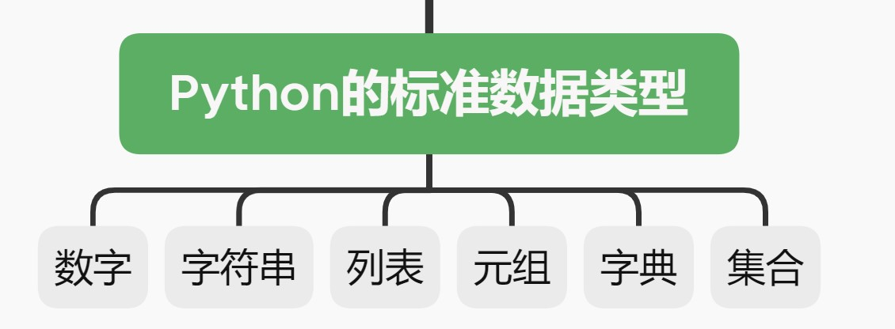
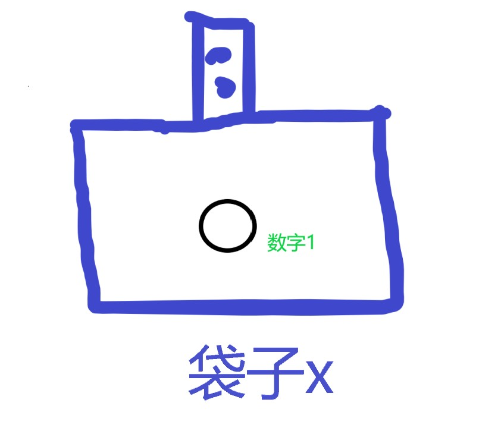
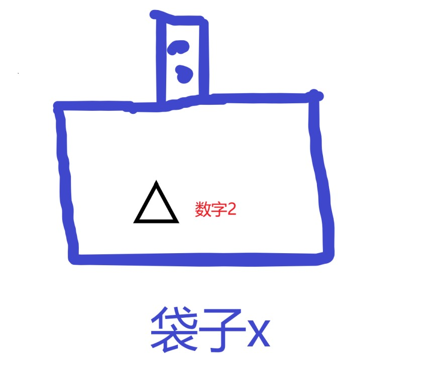
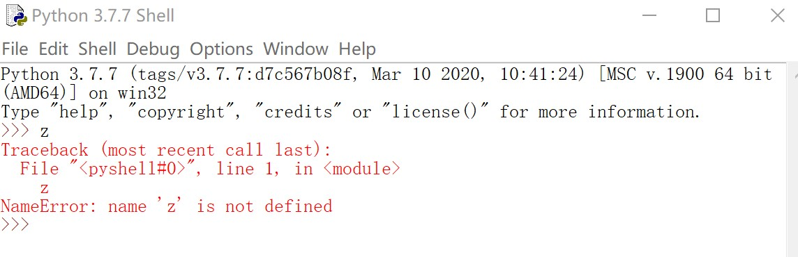
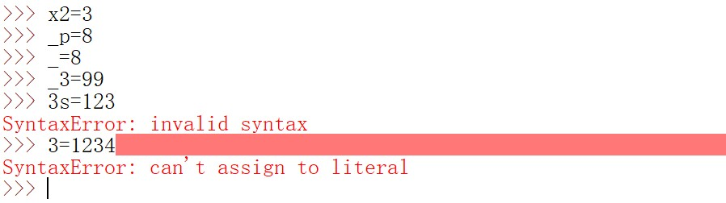
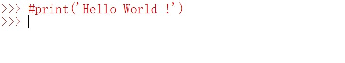
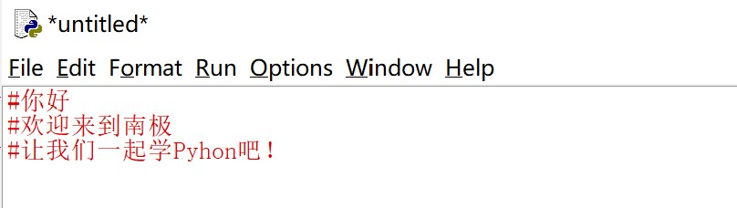
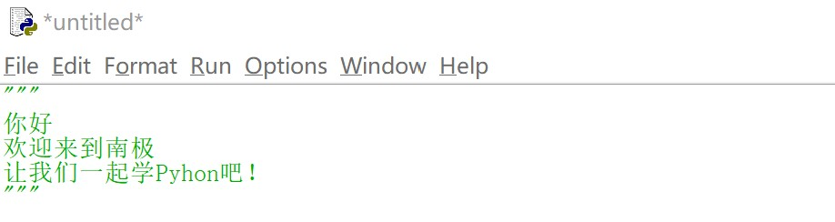

变量，注释，缩进，细数Python优雅风-Python基础连载（二）
开篇
在之后的几期文章中，你将会陆续学习到Python的六个标准数据类型

不过在此之前，有一些先导内容需要掌握，所以这一期就先来介绍一下这些内容。
Python中的变量
所谓变量，顾名思义，就是“会变化的量”。
在Python中，你可以把变量当作一个袋子，袋子里面可以装水果，可以装手机，也可以装书籍。
现在，将数字1装入一个叫做x的袋子，可以这样写：
1 | x=1 |
这一句代码的作用就是定义了一个变量，名字叫做x，同时将数字1赋值给变量x。用上面的袋子的例子来解释，就是将数字1装入了袋子x，就像下图这样
(【注】在Python中，=是赋值号，用于将*=*右边的值赋值给*=*左边的变量，并不是数学中的等于号。)

当你不想让这个袋子x装数字1，而是想装入一个新的数字2时，可以直接这样写
1 | x=2 |
此时，袋子x中所存放的，就只有数字2了，如下图所示

装入新的数字2的过程，就相当于修改变量内容的过程，这里就体现了变量中的变。
【下面这一段属于扩展知识，目前仅作了解即可，在之后会有详细讲解】
你可能会疑惑，之前的数字1去哪了？其实，数字1被新来的数字2给覆盖掉了，变量x是保存的始终是最新的值。这里如果深入探究一下，那就涉及到了可变数据类型和不可变数据类型。数字是不可变数据类型，如果是直接修改变量x的值(这里的值就是数字1)，则会将原先保存在变量内的值(数字1)抹去。如果在修改变量*x*之前，将变量的值赋值给另外一个新的变量y，然后修改变量x的值为数字2，则变量y的值仍是*数字1，变量*x*的值变为了数字2**，这一过程和我们的直观感觉是一样的。但是，如果变量是一个可变数据类型，比如列表，那情况就不一样了。具体内容将在后面介绍。
*
如果之前学习过*C语言，你应该知道，在C*语言中，变量在使用之前必须先声明，就像下面这样：
1 | int x;x=5 |
对比来看，*Python就简洁很多，一行代码x=5就能搞定！原因就在于Python*中的变量不需要先声明再赋值，而是在赋值的同时定义变量。
总之，需要明确的是，在Python中，变量只有在被赋值时才能被定义。
举个反例：如果直接写一个变量名，比如z，而不给它赋值时，则会报错

Python的变量是动态类型的。所谓动态类型，就是说变量中保存的数据类型是不固定的，可能上一秒保存的是数字，下一秒通过修改就能表示字符串了。
正如之前所讲，在Python中，变量就是个袋子，袋子里面可以装水果，可以装手机，也可以装书籍。
变量的命名规则
Python中的变量名只能包含数字，字母以及下划线，且不能以数字开头。
变量名可以是一个单独的字母，可以是一个单独的下划线，也可以是数字、字母和下划线的组合，但绝对不能是一个单独的数字。
有点摸不着头脑？没关系，举个栗子就清楚啦：

你看，以数字3开头的3s，单独一个数字3都报错了，所以它们都不能作为变量名。
还有两点要说明的是：
Python是区分大小写的。变量a和变量A是两个完全不同的变量。- 不能使用
Python中的关键字(也称保留字)作为变量名，比如if，for，break等，这些关键字在后面都会讲到。
Python中的注释
在Python中，用#来表明这一行是一条注释语句，还是举个栗子：
1 | #print('Hello World !') |
运行上述代码，不会有任何输出，因为被注释掉的语句会被Python忽略掉。

如果你想要将一整段文字注释起来，画风可能是这样的：

事实上，Python还提供了另外一种注释方法，那就是使用一对****三引号（单引号/双引号均可）可以直接将整段文字注释掉，于是画风由红变绿：

Python特有的风格：缩进
如果你以前接触过C语言，那么你会惊叹Python是多么的简洁。
简洁的原因，除了能够使用简单的语法实现强大的功能等之外，还有就是其缩进的风格。
不同于C等其他编程语言，Python使用缩进来表示一个代码块，同时需要用到符号:，这个符号表示缩进的开始，在之后学习的条件语句，循环语句以及函数等知识中都会遇到它。总之，缩进将贯穿编程始终，所以这里就不再举例了。
今天的内容并不多，相信读到这里的你已经吸收了这些知识。
让我们以Python之禅结束今天的文章吧
(你可以在IDLE中输入import this 来获取这首Python之禅)
1 | The Zen of Python, by Tim |